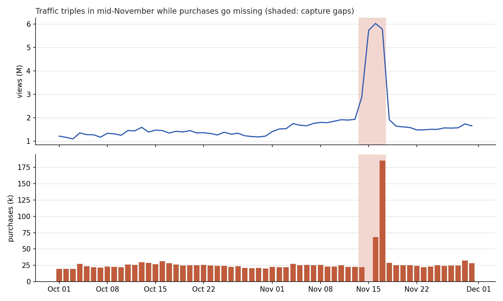
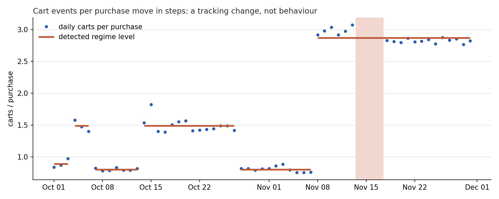
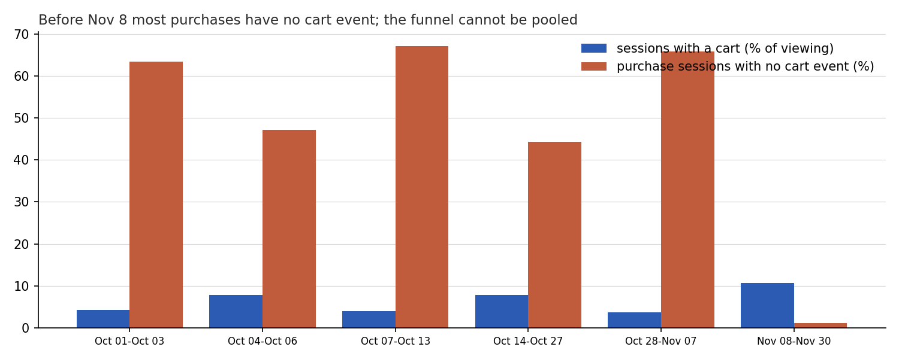
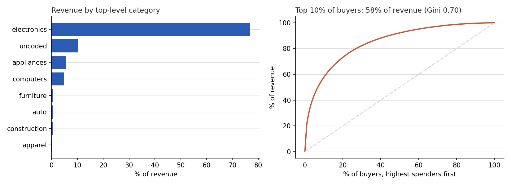

Two months of clickstream from a real multi-category online store, 110 million events in 14.7 GB of CSV, turned into a day-partitioned Parquet lake with DuckDB and queried in place. Before reporting a single funnel or revenue figure, the pipeline checks whether the logging itself is stable, and in this dataset it is not: purchases go unrecorded for 48 busy hours in mid-November, and cart events are tracked under six different regimes. A funnel pooled over the two months would be measuring the tracking, not the customers.
This page shows the project's results. The methodology, the design decisions and the limitations are documented in the repository's README.
Finding 1: purchases are missing for four days

An hour of this store with at least 5,000 events and zero purchases is not a quiet hour; the quietest normal hours still record purchases. By that rule, 48 hours on November 14–17 are capture gaps: November 15 has 468 thousand cart events and not one purchase, November 16 records purchases only between 08:00 and 15:00 UTC, and November 17 records them only from 03:00. Those days also carry 3.5 times the normal daily views, so a real sales event happened and the purchase log failed during it.
Finding 2: cart tracking changes six times

Daily purchases are flat for the two months, but cart events per purchase jump from one day to the next: 0.89, then 1.49, 0.80, 1.49, 0.80 and finally 2.87 from November 8. Binary segmentation on the daily log ratio finds exactly those six regimes (a split is kept only while it separates levels at least 30% apart). Customers do not change their basket habits overnight, and the alternation between two levels looks like a second cart-event source being switched on and off.

The session funnel shows what that does. Up to November 7, 44% to 67% of purchasing sessions contain no cart event at all, depending on the regime; from November 8 it is 1.2%. The cart step only became a reliable funnel step on November 8. Before that, a "view → cart → purchase" conversion rate would have been dividing by a number the tracking was not recording.
Finding 3: who buys

- Electronics is 76.9% of revenue, then uncoded (10.2%), appliances (5.6%) and computers (4.8%). - Spending is concentrated: the top 1% of 589,820 buyers account for 21.5% of revenue and the top 10% for 57.7% (Gini 0.70). - 46.4% of October's visitors come back in November; of October's buyers, 26.3% buy again in November. The second number is biased low by the November gaps and is reported as a lower bound. - 35.7% of buyers purchase in more than one session.